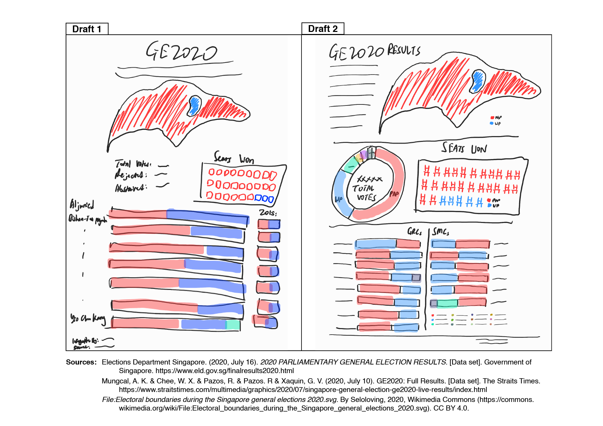
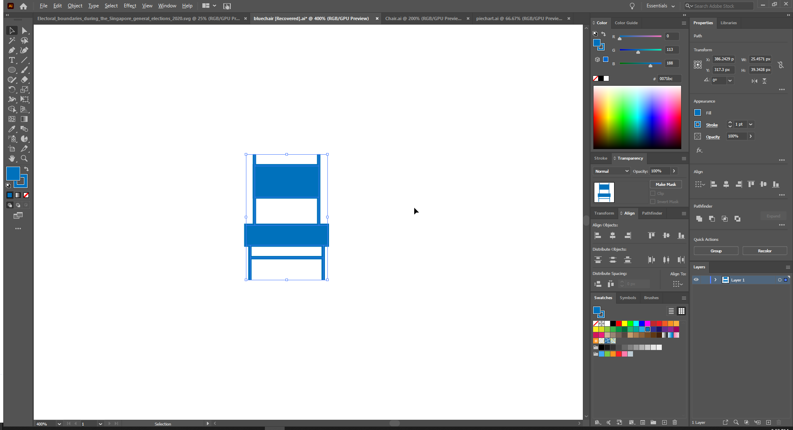
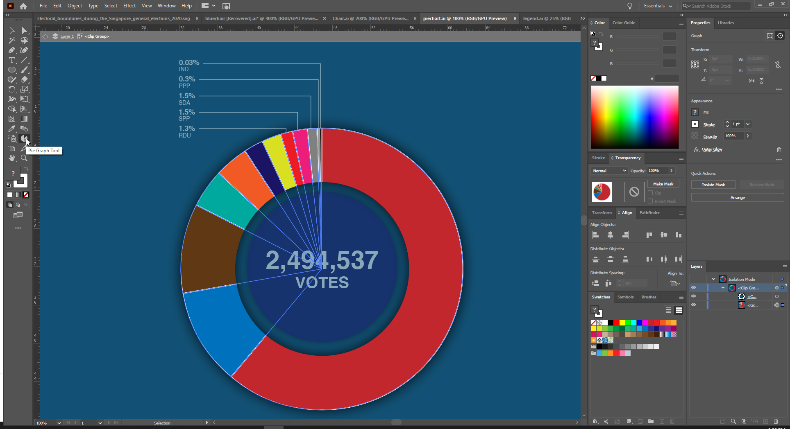
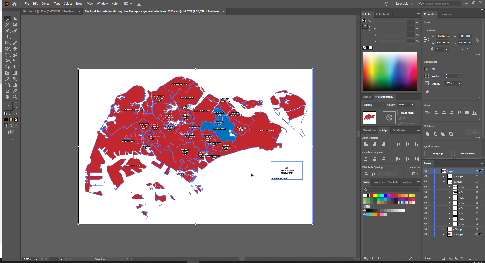
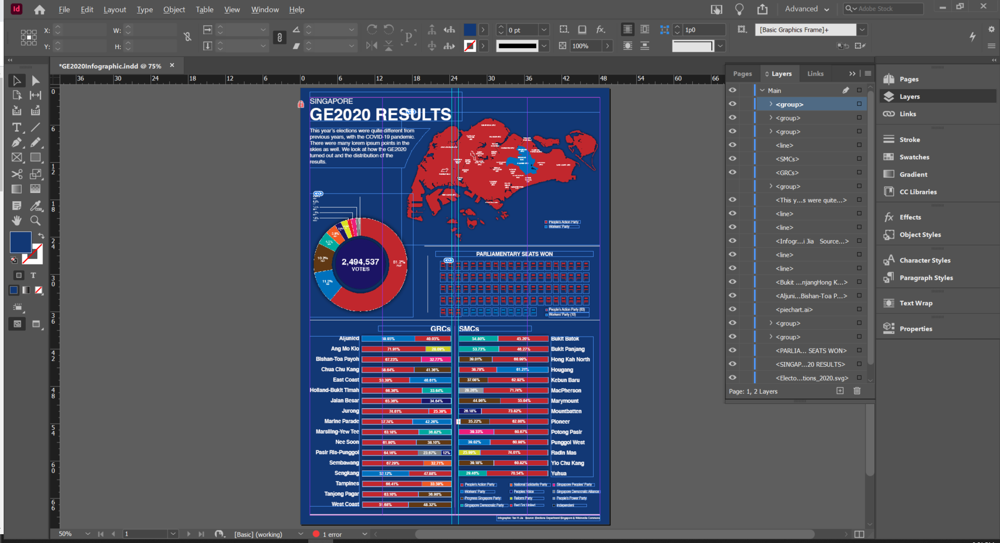
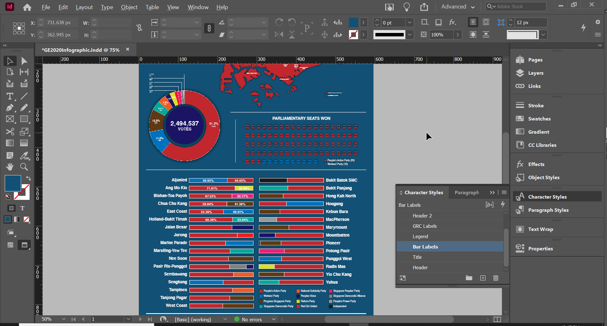
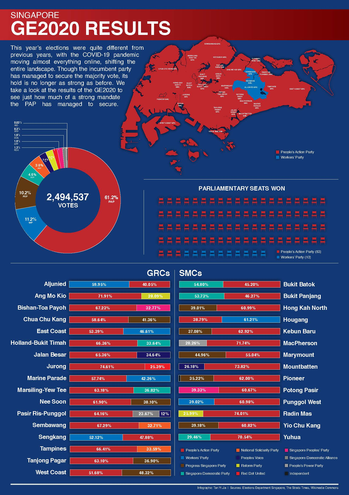
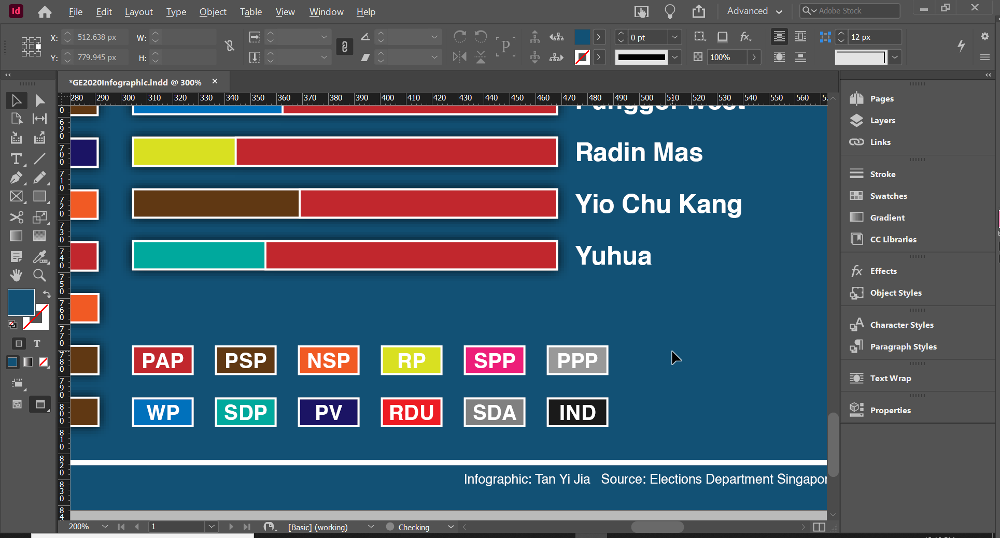

For this assignment, I created an infographic summarising the results of Singapore's GE2020. You can view the final pdf HERE.
Why GE2020?
I went online searching for an infographic for the results of Singapore's GE2020, but could not find any. As such, I thought I could attempt to fill this gap by creating an infographic.
Sketches
Before proceeding with creating the actual poster, I made two sketches.
Infographic Sketches
At first, I tried making an infographic based on the 1st design. However, I noted a few things:
- There were too many constituencies to fit into one column as depicted.
- Having a section to simply show "Total Votes", "Rejected", and "Abstained" was rather empty.
- There was nothing summarising the overall results of the vote distribution.
- I removed the "2015" section to make space for a second column of data for the constituencies. This also allowed for a legend at the bottom right.
- I replaced the "Total Votes... Abstained" section with a pie chart containing a summary of the overall vote distribution.
Creating the Graphics
First, I designed the chair in illustrator. This was a simple shape created with lines and boxes, a good enough abstraction of a chair since I was already going to add a header for the section indicating that these are "Seats" anyway.
Designing the chair in Illustrator.
Then, I created the pie chart using the pie chart tool. I created a circle in the middle and used a clipping mask to hollow out the centre. Furthermore, to emphasise the numbers, I increased their size and made them bold.
Designing the pie chart in Illustrator.
Finally, I found a Singapore constituency map SVG online with a Creative Commons license. In Illustrator, I coloured all the PAP constituencies red and WP constituencies blue and changed the text colour to white to match my infographic's style. I also removed Pedra Branca since I felt it wasn't necessary for my infographic.
Editing the Singapore Map in Illustrator.
Designing the Infographic
I used InDesign to compile everything onto an A4 document.
One feature I utilised heavily was the Groups, so I can easily edit multiple elements together.
Utilising guides and groups to design my infographic.
Also, I used character and paragraph styles to easily make changes to text elements in the same style by simply editing the style rather than editing each object individually.
Utilising character and paragraph styles.
Finally, the first draft of my infographic was complete.
The first draft of the infographic used for the critique.
Design Decisions
1) Balance
The layout of the constituencies are symmetrical to create a sense of symmetrical balance. The party with the majority vote (aka winning party) is put closest to the name of the constituency, and their names are aligned in the direction of the bars. This sense of symmetry evokes a sense of formality and structure to the infographic, making it appear more readable and reliable.
Furthermore, I increased the size of the pie chart to make the text more legible and infographic more interesting and create a sense of asymmetrical balance in the top half of the infographic whereby the map balances out with the pie chart. As such, the viewer's eyes will be guided from the map, to the pie chart, to the seats, and finally to the constituency vote distribution; creating a sense of movement.
2) Background & Contrast
I decided on a dark blue background to evoke a sense of reliability and wisdom for the viewer, important for a political infographic. I hence used white text to contrast with the dark background to increase readability - making the content-heavy infographic more digestible.
Notice that the pie chart is missing a shadow. This was due to a glitch between InDesign and Illustrator, which I later fixed. However, here you can see how - without the shadow - the pie chart doesn't pop as much as the other graphics.
3) Emphasis
To emphasise on PAP's parliamentary seat winnings, I contrasted the blue seats at the end in the parliamentary seats section with the dominant red seats. The break in the repetitive pattern highlights how few seats the opposition had won. This same emphasis by colour is used in the Singapore map, where the small blue section sits amidst a large sea of red.
4) Typeface
I decided to use the Helvetica typeface since its sans-serif type makes it easier to read, and it is also used in many professional settings - further reinforcing my infographic's reliability.
5) Other Creative Decisions
I added thin lines to segment the different sections of the infographic to distinguish them from one another and make the infographic more readable.
Furthermore, I also tried a different design for the legend - but I felt it added undesirable weight to the legend, distracting the viewer's attention.
I tried a different style for the legend, but it created unwanted emphasis.
Finally, I used a red gradient for the header's background strip to not only match Singapore's red colour, but to also match the dominant PAP red in the infographic. A gradient was used instead of a solid colour to make the infographic more interesting. I also decided to have the strip overlap with the map, as the shadow casted by the map on the strip helps to make it pop even more.
Post-Critique
I was told that my colour scheme seems to resemble the PAP's colour scheme! It wasn't intentional. This led me to think about PAP's intention behind their logo colours: Could the blue be used to evoke a sense of wisdom and reliability, similar to my infographic?
Also, I was told that some viewers might require an extra step to deduce that the percentages in the GRCs/SMCs section represented the distribution of votes for each constituency. As such, I decided to add a "DISTRIBUTION OF VOTES" header to the section to fill this deductive gap.

The Final Product.
 "It's already the end of week 9 help me!"
"It's already the end of week 9 help me!"